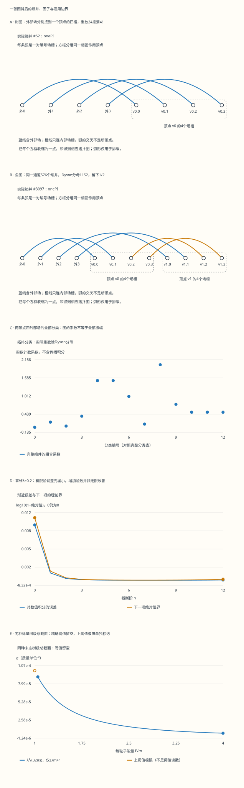

本页目录
场论 II · 相互作用与 Feynman 图
前置：qft-01 的自由场与传播子、qm-04 的微扰论、aqm-02 的散射态；本页使用自然单位 \(\hbar=c=1\) 和度规 \((+---)\)。
本页要解决的问题：一个顶点为什么留下 \(-i\lambda\)，一圈鱼图为什么还要乘 \(1/2\)？从图得到的振幅怎样变成截面？每一个组合因子都能回到有限编号场槽的配对；连续场论的积分、真空选择和渐近展开则要分别说明其适用条件。
1. 一张图究竟代表什么
我们选一个实标量场：\(\mathcal L=\frac12(\partial\phi)^2-\frac12m^2\phi^2-\lambda\phi^4/4!\)。四个场因子在同一点相乘，是局域相互作用。这里没有时间导数相互作用，所以正则动量仍为 \(\pi=\dot\phi\)，相互作用哈密顿量才可以写成 \(H_I(t)=\lambda\int d^3x\,\phi_I^4(t,\mathbf x)/4!\)。若相互作用含时间导数，须重新做 Legendre 变换，不能照抄这个符号规则。
先把三个层次分开。缩并是把两个自由场因子替换成传播子；拓扑图把仅差内部场槽排列的缩并归到一起；散射振幅还要把传播子和顶点相乘、对未确定的内部动量积分。图上两条线交叉而没有标出的顶点，不发生额外相互作用。虚内线也不服从外部粒子的上壳条件，但每个顶点始终满足四动量守恒；不需要诉诸“短时间借用能量”。
在四维，\([\phi]=1\)、\([\lambda]=0\)。本页的组合实验保留自缩并，等价于没有预先把 \(\phi^4\) 正规序；它数出了蝌蚪图，却没有把蝌蚪积分变成有限数。发散积分的处理将在重整化课程中继续。
2. 先预测，再展开全部记录
可以先点“24次连接生成一个树顶点”，再点“一圈s通道的1/2”。注意外部标签保持固定，两个相互作用顶点各有四个临时槽标签。下载里保留每一次完整配对、图的连通分量和分类依据。零维积分与四维散射是两个独立教学模型，共用耦合滑块仅为了对照数量级，不是把零维积分当成四维截面的答案。
无脚本对照：五图与六行数据来自同一份固定记录。完整缩并、形式级数归一化、数值积分子区间和四动量均可下载。

| 预设 | 完整配对数 | Dyson分母 | 当前分类 | 真空分量数 | 零维Z数值 | 同种树级总σ |
|---|---|---|---|---|---|---|
| tree | 105 | 24 | onePI | 0 | 0.977915373 | 4.42097064e-05 |
| fish-s | 10395 | 1152 | onePI | 0 | 0.977915373 | 4.42097064e-05 |
| onepr | 10395 | 1152 | onePR | 0 | 0.977915373 | 4.42097064e-05 |
| vacuum | 105 | 1152 | connected-vacuum | 1 | 0.977915373 | 4.42097064e-05 |
| threshold | 105 | 24 | onePI | 0 | 0.977915373 | 不适用 |
| zero | 1 | 1 | vacuum-product | 0 | 1 | 0 |
下载六组完整记录。数值积分的误差估计不是严格证书；余项界由正文Taylor积分公式证明。自缩并计数不消除连续场论的紫外发散。
3. Dyson 分母为什么是顶点数的阶乘
把 \(H=H_0+H_{\mathrm{int}}\) 分开后，相互作用绘景满足 \(i\partial_tU_I(t,t_0)=H_I(t)U_I(t,t_0)\)。先积分一次得到 \(U_I=1-i\int_{t_0}^{t}H_I(t_1)U_I(t_1,t_0)dt_1\)，再迭代。二阶积分只覆盖 \(t_0<t_2<t_1<t\)；一般 \(V\) 阶覆盖一个有序时间单纯形。
把这个区域扩成完整时间立方体，必须同时用 \(T\) 排序。除去等时的零测集，每一种时间排列占一份相同体积，因此出现 \(1/V!\)。这不是假设不同时刻的哈密顿量可交换，而是先排序再对排列求和：
这一式是带有真空与渐近时间处方的形式微扰展开。按固定阶使用它，不等于已经证明右边的无穷级数收敛。符号 \(4!\) 负责每个顶点的四个相同场槽，\(V!\) 负责相互作用插入的排列，后面还会遇到末态计数的 \(2!\)；三者来源不同。
4. Wick 算符恒等式与真空期望不要混写
把自由场写成湮灭部分加产生部分。将湮灭算符移到右侧，每跨过一个产生算符就产生一个数值交换子。对两个场，这给出 \(T\{\phi_1\phi_2\}=: \phi_1\phi_2 :+D_{12}\)，其中 \(D_{12}=\langle0|T\phi_1\phi_2|0\rangle\)。
对四个场，完整算符公式是
中间有六个单次缩并项。自由真空期望会消掉仍含场的正规序项，才只剩末尾三项。对一般偶数个场，取最小未配对标签，它可以选择其余任一个作为伙伴，剩下的标签继续配对。因此完整配对数满足 \(N_{2n}=(2n-1)N_{2n-2}\)，且 \(N_0=1\)，即 \(N_{2n}=(2n-1)!!\)。空配对有一种，不是零种。
这个递归不遗漏也不重复：任何完整配对都有唯一的“最小标签的伙伴”，删除这一对后又有唯一的较小配对。实验对最多十二个场槽执行这条递归，所有配对都可逐行检查。算符 Wick 恒等式则还包括部分配对和未配对场；实验明确只枚举自由真空期望中的完整缩并。
5. 从 105 个缩并里找出树级顶点的 24 个
四个外部场加一个四价插入，总共有八个编号场槽，所以完整配对数是 \(7!!=105\)。其中有些外部场直接彼此缩并，另外一些有内部自环；它们不都是四外腿接触树图。
若要求四个外部场各自接到唯一顶点，第一条外腿可选四个槽，第二条三个，第三条两个，第四条一个，合计 \(4!=24\)。于是这一拓扑的系数是 \(24/4!=1\)，顶点规则为 \(-i\lambda\)。这一步只消掉局部场槽重数，不能保证所有高阶图的对称因子都为一。
以 \(\langle f|S-1|i\rangle=i(2\pi)^4\delta^{(4)}(P_f-P_i)\mathcal M\) 定义约化振幅，则树级接触图满足 \(i\mathcal M=-i\lambda\)，所以 \(\mathcal M=-\lambda\)。顶点位置积分产生整体守恒分布；省去它是定义约化振幅，不是允许动量不守恒。
6. 两个顶点：三种鱼图通道为什么各有一半
现在有十二个槽，完整配对数变成 \(11!!=10395\)，Dyson 分母为 \(2!(4!)^2=1152\)。外部标签取 \(0,1,2,3\)。要得到鱼图，将两个外腿接到一个顶点，另两个接到另一个顶点，再用两条内线连接剩余场槽。
固定一个无序分区，比如 \(01|23\)。将分区分配给两个有标号的顶点有两种；每个顶点的两条有标号外腿选槽有 \(4\times3=12\) 种；余下两个槽在顶点之间配对有 \(2!\) 种。于是这个通道有 \(2\times12^2\times2=576\) 个缩并，权重 \(576/1152=1/2\)。三个分区 \(01|23\)、\(02|13\)、\(03|12\) 对应 \(s,t,u\) 通道，共 \(1728\) 个鱼图缩并。
但无外外边的缩并总计 \(5040\) 个。另有 \(2304\) 个连通的外腿蝌蚪修正、\(864\) 个两个分开的二点块，以及 \(144\) 个接触树图乘一个真空泡。它们相加才是 \(5040\)；另外 \(5355\) 个至少含一条外外边。这些数来自完整枚举，也可用逐顶点选槽的阶乘公式重算。
1PI 的意思是一个连通图切掉任一内部传播线后仍然连通。鱼图的两条跨顶点内线切一条仍连接两个顶点；外腿蝌蚪修正只有一条跨顶点线，切掉就断开，属于 1PR。树级接触图没有内线，按这个定义也是 1PI。判据针对图的连通性，不能用“看起来有一个圈”代替。
7. 真空归一化与取连通函数是两步
在适当真空选择处方下，相互作用真空的关联函数可按形式级数写为 \(G_E=\langle0|T\phi_1\cdots\phi_E S|0\rangle/\langle0|S|0\rangle\)。分子中每个图的真空分量没有任何外部场，它独立相乘；将相互作用插入分配给这些分量的二项式重数与 Dyson 阶乘配合，给出同一个真空级数因子。除掉分母后，每个分量都连着至少一个外部场，但不要求所有外部场在同一分量。
可以用一个没有积分发散的零维模型直接检验区别。令 \(X\sim N(0,1)\)，\(Z(\lambda)=\mathbb E e^{-\lambda X^4/24}\)，\(G_E(\lambda)=\mathbb E[X^E e^{-\lambda X^4/24}]/Z(\lambda)\)。这里所有自由协方差都为一，每种完整配对的权重相同。Gaussian 偶数矩由分部积分满足 \(\mathbb E X^{2n}=(2n-1)\mathbb E X^{2n-2}\)，正好复现配对数。
分母前三个系数为 \(1,-1/8,35/384\)；二点分子系数为 \(1,-5/8,105/128\)；四点分子系数为 \(3,-35/8,1155/128\)。按 \(A_n=\sum_{j=0}^{n}Z_jG_{n-j}\) 逐阶解商，得到
实验把商的系数与“没有真空分量”的枚举比较，再把 \(\kappa_4\) 与“只有一个连通块”的枚举比较。零阶 \(G_4(0)=3\) 已经说明：除真空因子并不会让四点函数只保留一个连通块。这里的连通函数采用通常的累积量含义；有些讲义把“没有真空分量”也称 connected，阅读时需检查定义。
8. 从连通图到上壳振幅，还要截肢与处理极点
位置空间四点函数含有从每个外部位置到相互作用区的传播子。Fourier 变换后，这些外腿传播子也在结果里，而散射态已经单独归一化，所以不能再保留一份相同外腿因子。
若完整二点函数在一个稳定单粒子极点附近为 \(\widetilde G_2(p)\sim iZ_\phi/(p^2-m_{\mathrm{phys}}^2+i0)\)，LSZ 过程是先识别并除去每条外腿的极点因子、带上相应的场强归一化，再取上壳极限。树级自由归一化时 \(Z_\phi=1\)，所以外腿截肢表现为乘上传播子的逆。这里没有给出 LSZ 的完整证明；有稳定渐近单粒子态和合适极点结构是它的前提，不能把任意关联函数直接当作 S 矩阵。
一个连通图有 \(I\) 条内线、\(V\) 个顶点时，顶点守恒约束中有一个给整体动量守恒，其余 \(V-1\) 个可消去内部积分，因此独立圈动量数为 \(L=I-V+1\)。断开的图需要逐个连通分量计数。本实验也只给连通内图记录这个圈数。
对四点 1PI 鱼图，形式振幅为 \(\frac{(-i\lambda)^2}{2}\int\frac{d^4\ell}{(2\pi)^4}\frac{i}{\ell^2-m^2+i0}\frac{i}{(\ell+P)^2-m^2+i0}\)，再对三个通道求和。大动量时表现为对数紫外发散；只写这个积分没有定义一个有限预测。外腿修正、物理质量、场强和反项如何组合，应放在同一重整化约定下处理，不能把“三种鱼图”叫作未加限定的全部一圈四点关联函数。
9. 四动量先算清，角度与通道才有含义
在质心系，入射四动量取 \(p_1=(E,0,0,p)\)、\(p_2=(E,0,0,-p)\)，出射取 \(p_3=(E,p\sin\theta,0,p\cos\theta)\)、\(p_4=(E,-p\sin\theta,0,-p\cos\theta)\)，其中 \(E^2=p^2+m^2\)。每条外腿都上壳，总四动量逐分量守恒。
由定义 \(s=(p_1+p_2)^2\)、\(t=(p_1-p_3)^2\)、\(u=(p_1-p_4)^2\)，直接相乘得到 \(s=4E^2\)、\(t=-2p^2(1-\cos\theta)\)、\(u=-2p^2(1+\cos\theta)\)，所以 \(s+t+u=4m^2\)。交换两末态标签使 \(t\) 和 \(u\) 对换。树级接触振幅没有角度依赖；鱼图则可通过通道动量产生不同的函数。
实验的 \(E/m=1\) 是精确阈值，四动量和 Mandelstam 变量仍有意义，但入射相对速度为零。下一步的截面定义要除以通量，因此这个点的普通截面读数留空，而不是把消去后的公式直接代进去。
10. 从振幅到截面：把两个不同的对称因子分开
相对论归一化下，二体相空间是 \(d\Phi_2=(2\pi)^4\delta^{(4)}(P-p_3-p_4)\frac{d^3p_3}{(2\pi)^3 2E_3}\frac{d^3p_4}{(2\pi)^3 2E_4}\)。先用空间 delta 积掉 \(\mathbf p_4\)，再用能量 delta 积掉径向动量。质心系结果为 \(d\Phi_2/d\Omega=p_f/(16\pi^2\sqrt s)\)。
入射通量因子为 \(\mathcal F=4\sqrt{(p_1\cdot p_2)^2-m^4}=4p_i\sqrt s=8Ep_i\)。对有标记的两个末态，\(d\sigma/d\Omega=|\mathcal M|^2p_f/(64\pi^2s p_i)\)。本模型同质量弹性散射在阈值以上有 \(p_f/p_i=1\)；同种末态若积分覆盖完整 \(4\pi\)，还需一个 \(1/2!\)，故
同样也可以只积分不重复的末态区域，例如一个半球，此时不再额外除以二。这里 \([\sigma]=-2\)，与面积的自然单位相符。先前鱼图的 \(1/2\) 是缩并重数；这里的 \(1/2!\) 是不重复计数物理末态；树顶点的 \(4!\) 抵消两者都没有预先完成。
当 \(s\downarrow4m^2\)，树级总截面趋向 \(\lambda^2/(128\pi m^2)\)，但精确阈值同时有 \(p_i=0\) 和通量为零，只能将这个数解释为上阈值极限。若耦合很大，树级结果仍是一个可计算公式，却未必是可靠的完整理论近似。
11. 积分存在，并不意味着它的微扰级数收敛
回到零维 \(Z(\lambda)\)。对 \(\lambda\ge0\)，被积函数被 Gaussian 密度控制，所以积分有限。形式 Taylor 项为 \(a_n=(-\lambda)^n(4n-1)!!/(24^n n!)\)。相邻项的绝对值比是 \(|a_{n+1}/a_n|=\lambda(4n+3)(4n+1)/(24(n+1))\sim2\lambda n/3\)。任何固定 \(\lambda>0\) 都使这个比值最终大于一，项不趋零，因此级数不收敛。
有限阶为什么仍有用？对 \(u\ge0\)，Taylor 积分余项为 \(e^{-u}-\sum_{n=0}^{N}(-u)^n/n!=(-1)^{N+1}\int_0^u e^{-v}(u-v)^N dv/N!\)。由于 \(0<e^{-v}\le1\)，余项符号固定，绝对值不超过 \(u^{N+1}/(N+1)!\)。取 \(u=\lambda X^4/24\) 再取期望即可严格得到 \(0\le(-1)^{N+1}(Z-S_N)\le|a_{N+1}|\)。这是固定 \(N\)、\(\lambda\to0^+\) 的渐近控制，而不是允许把 \(N\) 推到无穷。
实验还用自适应 Simpson 方法计算一个独立的数值积分参考：利用偶对称积分 \(x\in[0,12]\)，保存每个接受子区间的五个函数值、粗细积分、修正量和误差估计。剩余尾部小于 \(\sqrt{2/\pi}e^{-72}/12\)。Simpson 的误差估计不是严格区间证书，所以曲线标注“对数值积分的误差”，并将理论下一项界另列；\(\lambda=0\) 则直接使用精确 \(Z=1\)。这个例子证明的是一个零维模型的渐近性质，不是四维相互作用量子场论的非微扰构造。
12. 八道练习：把图的每一步算回来
1 · 四个自由场：为什么三项只适用于真空期望？
写出四场 Wick 算符恒等式的三类项，并数每类有几个。
详解。 无缩并项有一个 \(:\phi_1\phi_2\phi_3\phi_4:\)；选择一对缩并有 \(\binom42=6\) 个，余下两个场仍在正规序符号内；完全缩并有 \(3!!=3\) 个。总共有十个算符结构。对自由真空取期望，前七个结构均为零，留下 \(D_{12}D_{34}+D_{13}D_{24}+D_{14}D_{23}\)。若四个场都是同一个单位方差 Gaussian 变量，则三个传播子乘积都为一，得到 \(\mathbb E X^4=3\)。
2 · 一个顶点：105个缩并为什么只用24个来得到树振幅？
将四个外部场与四个顶点槽完整配对，按外外边数分类。
详解。 两条外外边有三种外部配对，内部四槽也有三种配对，合计 \(9\)。一条外外边先选外部对的 \(6\) 种，再把剩余两条外腿接到四槽中的两个有序槽，共 \(12\) 种，余下两槽自行配对，合计 \(72\)。没有外外边就必须四条都接到顶点，有 \(24\) 种。\(9+72+24=105\)，但接触树图只取最后一组，所以系数是 \(24/24=1\)，\(\mathcal M=-\lambda\)。
3 · 两顶点真空图：连通图和真空乘积各占多少？
无外部场时，按跨顶点边数 \(c\) 分类并除以 Dyson 分母。
详解。 每顶点有四槽，故 \(c\) 只能为 \(0,2,4\)。\(c=0\) 时两顶点各自有三种内部配对，共 \(9\)，是两个真空分量的乘积。\(c=2\) 时每顶点选跨边槽有 \(\binom42=6\) 种，两跨边有 \(2!\) 种接法，共 \(72\)，每顶点还剩一条自环。\(c=4\) 时有 \(4!=24\) 种。\(9+72+24=105\)；除以 \(1152\) 得 \(1/128,1/16,1/48\)。后两组连通，第一组也正好等于两个单顶点真空系数乘积的 \(\frac12(1/8)^2\)。这说明指数展开中的分量阶乘也不能漏掉。
4 · 三个鱼图通道，与外腿蝌蚪怎样区分？
重算一个鱼图通道的系数，解释为什么外腿蝌蚪也有一圈却不是四点1PI。
详解。 固定外腿分区 \(01|23\)，顶点分配 \(2\) 种，两个顶点的外腿选槽各 \(12\) 种，跨顶点剩余槽配对 \(2\) 种，得到 \(576\)，除以 \(1152\) 得 \(1/2\)。两条跨顶点内线中删一条仍连通，所以为1PI。外腿蝌蚪的外腿分配为 \(1+3\)，只有一条跨顶点内线且有一个自环；删掉跨线后两个顶点分开，所以为1PR。两种图都有 \(I=2,V=2,L=1\)，圈数本身不能判断1PI。
5 · 消真空因子后，为什么还要减3G₂²？
由本页给出的 \(G_2,G_4\) 求四点累积量的二阶项，并与完整连通图计数核对。
详解。 \(G_2^2=1-\lambda+(1/4+4/3)\lambda^2+O(\lambda^3)=1-\lambda+19\lambda^2/12+O(\lambda^3)\)。于是 \(G_4-3G_2^2=-\lambda+(33/4-19/4)\lambda^2+O(\lambda^3)=-\lambda+7\lambda^2/2+O(\lambda^3)\)。二阶单个连通块包含鱼图 \(1728\) 个和1PR外腿修正 \(2304\) 个，合计 \(4032/1152=7/2\)，正好一致。这里没有把连通函数偷换成1PI顶点函数。
6 · 一个可手算的散射点：m=1，E/m=3/2，cosθ=0
取 \(\lambda=1/5\)，求不变量、通量和同种末态树级总截面。
详解。 \(E=3/2\)、\(p=\sqrt5/2\)，所以 \(s=9\)、\(t=u=-5/2\)，和为 \(4\)。通量是 \(8Ep=6\sqrt5\)；相空间每立体角为 \(p/(16\pi^2\sqrt s)=\sqrt5/(96\pi^2)\)。将 \(|\mathcal M|^2=1/25\) 乘相空间、除通量再除末态 \(2!\)，得到 \(d\sigma/d\Omega=1/(28800\pi^2)\)。乘 \(4\pi\) 得 \(\sigma=1/(7200\pi)\)。若将整球积分和末态计数重复处理一次，会再小一倍。
7 · 阈值和角度：哪些量为零，哪个量只能给极限？
在 \(E/m=1\) 时分别判断 \(p,t,u,\mathcal F,d\Phi_2/d\Omega,\sigma\)。
详解。 \(p=t=u=\mathcal F=d\Phi_2/d\Omega=0\)，而 \(s=4m^2\)，每个外腿仍上壳。未消去的截面表达式含 \(0/0\)，不能给精确阈值赋一个普通值。在阈值以上先用 \(p_f=p_i>0\) 约去动量，再取极限，才得到 \(\lim_{s\downarrow4m^2}\sigma=\lambda^2/(128\pi m^2)\)。阈值时散射方向本身也退化，任意 \(\cos\theta\) 都描述零空间动量。
8 · λ=1/5的零维近似：两阶能给什么严格信息？
算出 \(S_1,S_2\) 和下一项界；判断无穷级数是否收敛。
详解。 \(a_0=1\)、\(a_1=-\lambda/8=-1/40\)、\(a_2=35\lambda^2/384=7/1920\)，所以 \(S_1=39/40=0.975\)、\(S_2=1879/1920\approx0.9786458333\)。\(|a_3|=385\lambda^3/3072=77/76800\approx0.00100260417\)，Taylor余项符号给出 \(S_2-|a_3|\le Z\le S_2\)，一阶还给 \(S_1\le Z\)。合起来的下界取较大者，约为 \(0.9776432292\)；数值积分约 \(0.9779153734\) 落在区间内。相邻绝对项比最终增长，故任何固定正耦合下都不能把阶数无限加大来证明收敛。
后续路线。 下一课把这里明确留下的紫外发散积分、物理参数与反项连接起来。若练习2、4、5仍容易混淆，先用相同配对编号反复比较“没有真空分量”“单个连通块”“切任一内线仍连通”三个条件。
来源与复算范围。 David Tong 的相互作用场讲义提供 Dyson、Wick、图规则及散射到关联函数的课程背景。本页的有限场槽枚举、零维形式级数比较、Gaussian余项界与具体散射点均给出独立推导和数值记录；不以讲义里的简化连通术语替代本页明确的图论定义。